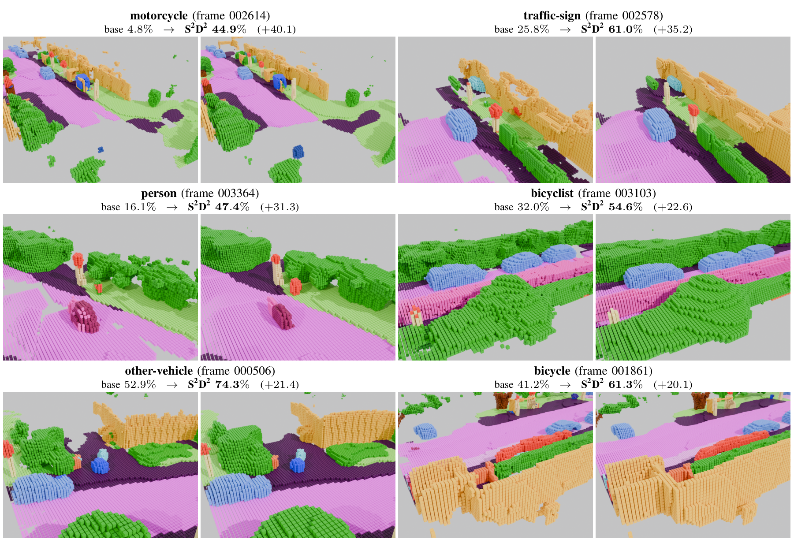

The semantic scene completion challenge

Abstract
Outdoor LiDAR semantic scene completion (SSC) recovers a dense semantic voxel grid from a scan observing 1% of the target volume, under class imbalance beyond 7,000×. We recast SSC as generative semantic scene completion (GSSC): a single discrete-diffusion formulation in three roles. First, paired sparse–dense scene synthesis (PS3) generates matched sparse LiDAR observations with their dense semantic completions, addressing the long tail at its source and yielding the PS3-SemanticKITTI corpus we train on alongside SemanticKITTI. Second, semantic-guided generative scene completion (SGSC) generates the scene from noise with multinomial discrete diffusion, conditioned on the sparse scan through a bird’s-eye-view semantic map and a sparse 3D feature stream. Third, the same framework instead refines an existing completion in one flow-matching step: structured source discrete diffusion (S2D2). S2D2 improves the mIoU of SGSC’s own output and every external SSC base tested, without base retraining or test-time adaptation. On the strongest base, one step without test-time augmentation reaches 38.8% mIoU on the SemanticKITTI hidden test. To our knowledge that is the best causal, single-sweep, single-sample result on that leaderboard, +2.1 pp over the previous best published score under the same restriction. Four correction steps with eight-view test-time augmentation reach 39.2%, outside that restriction.
Results

![Horizontal bar chart of SemanticKITTI hidden-test mIoU, one bar for each of the ten test rows of the paper’s Table I. All ten, longest bar first: double-dagger SCPNet (four sweeps) 47.5; double-dagger Ours + D4 ensemble (N=4, +D4 TTA) 39.2; SCPNet + S2D2 (N=1) 38.8; double-dagger TALoS (test-time adaptation) 37.9; SCPNet (published) 36.7; S3CNet 29.5; DiffSSC 27.4; JS3C-Net 23.8; SSA-SC 23.5; LMSCNet 17.6. The two bars that are ours, 38.8 and 39.2, are red; the other eight are grey published baselines. The leading double-dagger on three of the labels is explained under the axis as outside the headline predicate: multi-sweep, test-time adaptation, or ensembling. The best bar inside the predicate is our 38.8, above SCPNet’s published 36.7.](assets/figures/results_chart.webp)
Interactive comparison
Switch scene and view; the camera holds, so the four views line up. The sparse input carries no labels, so it is painted one colour.
Loading scene…
The interactive 3D viewer needs JavaScript. The same comparison is in the qualitative figure above.
: frozen base · ours · Chips: N=4, +D4 TTA — outside the headline predicate
How it works
PS3 — paired sparse–dense synthesis


SGSC — completion from noise

S2D2 — one-step refinement

Rare classes, before and after

Acknowledgements
This work was supported by the National Natural Science Foundation of China under Grant 624B1006 and by the Shanghai Science and Technology Committee under Grant 24511103900.
Evaluation uses the SemanticKITTI benchmark and its hidden test server. The comparison renders on this page — the qualitative figure, the rare-class gallery and the 3D viewer — are drawn from its validation sequence, seq. 08. Nothing inside the PS3 figure comes from that sequence: it shows a training-split frame, scenes the generator synthesised after being trained on that split, and real rare-class crops taken from the same split.
Those renders show SemanticKITTI ground-truth annotations, and the point clouds the 3D viewer loads are voxelised, class-recoloured exports of them — modified material, redistributed here. SemanticKITTI is © its authors and is licensed CC BY-NC-SA 4.0: credit the creators, non-commercial use only, and the same licence on anything built from it. Those terms travel with these exports, which are therefore offered under CC BY-NC-SA 4.0 and not under this page’s own terms. The dataset’s home is semantic-kitti.org, which asks that both the SemanticKITTI paper (Behley et al.) and the original KITTI Vision Benchmark (Geiger et al.) be cited; BibTeX for both is below, beside ours.
BibTeX
@unpublished{chen2026gssc,
title = {Generative Semantic Scene Completion},
author = {Chen, Shi and Ge, Weifeng},
note = {Under review},
year = {2026}
}The SemanticKITTI material shown on this page carries its own citation requirement. Both of these must accompany any reuse of it:
@inproceedings{behley2019semantickitti,
title = {{SemanticKITTI}: A Dataset for Semantic Scene
Understanding of {LiDAR} Sequences},
author = {Behley, Jens and Garbade, Martin and Milioto, Andres
and Quenzel, Jan and Behnke, Sven and Stachniss, Cyrill
and Gall, Juergen},
booktitle = {Proc. IEEE/CVF Int. Conf. on Computer Vision (ICCV)},
pages = {9297--9307},
year = {2019}
}
@inproceedings{geiger2012kitti,
title = {Are We Ready for Autonomous Driving? The {KITTI}
Vision Benchmark Suite},
author = {Geiger, Andreas and Lenz, Philip and Urtasun, Raquel},
booktitle = {Proc. IEEE Conf. on Computer Vision and Pattern
Recognition (CVPR)},
pages = {3354--3361},
year = {2012}
}